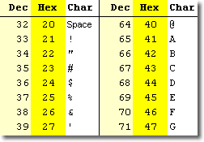
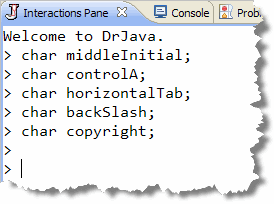
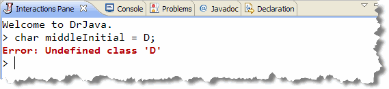
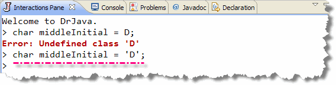
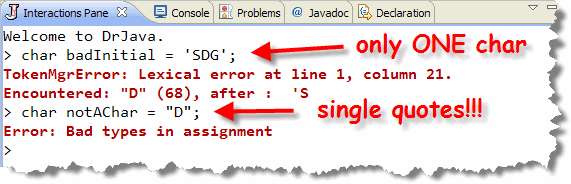
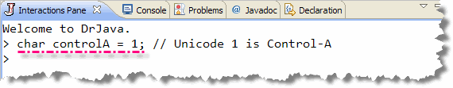
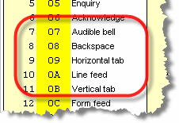
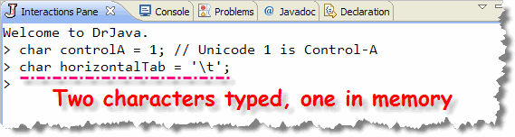
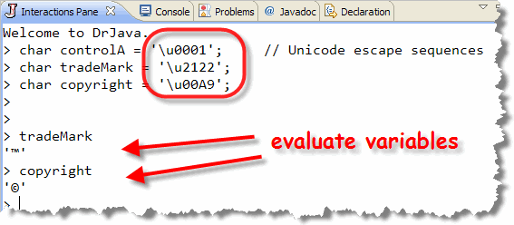

As you saw in Chapter 1, computers store character data by using an agreed-upon correspondence or mapping between a number and a character, similar to the encoding used in Morse Code.
Rather than use Morse-Code, invented for the telegraph, computer makers invented new codes. One of these was EBCDIC, invented by IBM for use on their mainframe computers.
IBM considered EBCDIC a proprietary technology, so the American Standards Institute (ANSI), created an "open source" alternative, called ASCII (The American Standard Code for Information Interchange), which has been, more or less, the standard in the PC and Unix worlds.
ASCII
;){kind=link}

ASCII uses 7 bits to store its characters. In ASCII for instance, the number 65 stands for the capital A. Here is a chart showing the standard ASCII characters and their numeric representations. (If your eyesight is getting a little blurry, as mine is, click the image and you can see the chart full-size.)
Because ASCII only uses 7 bits, each character can be stored in
a single byte, with room left over for some additional information.
This additional bit has been put to a variety of uses. The early
CPM/PC word processor, WordStar, used the extra bit to embed
"soft" line breaks. With the introduction of the IBM PC, the
extra bit was used to provide an additional 128 characters,
including some widely used line-drawing characters.
Many, however found that they didn't need that extra bit after all, and that seven bits were more than enough. Do a search on ASCII using your favorite search engine, and you'll see what I mean.
~(^^^^)~
) @@ \~_ |\
/ | \ \~/
( 0 0 ) \ | | Hey
---___/~ \ | | Hiya
/'__/ | ~-_____/ | Doin?
o _ ~----~ ___---~
O // | |
((~\ _| -| Oops! I mean MOOOOOOO
o O //-_ \/ | ~ |
^ \_ / ~ |
| ~ |
| / ~ |
| ( |
\ \ /\
/ -_____-\ \ ~~-*
| / \ \ .==.
/ / / / | |
/~ | //~ | |__|
~~~~ ~~~~
This is a picture of a cow blowing bubbles, isn't it?
Unicode
Although ASCII met a real need for a quasi-universal character encoding during the first half-century of the computer age, today ASCII is really showing its age. The computer world is now much larger than it was in the past, especially with the Internet explosion. Not only are computer users using non-English languages, but their languages are often written using non-Roman alphabets; alphabets that won't fit into ASCII's seven or eight bits, no matter how much they are shoe-horned.
Several alternative character encoding schemes have been suggested to replace ASCII, and as a programmer you might have to deal with some of them, such as DBCS (Double-Byte Character Set), and other multi-byte character sets.
By now, however, it looks like the winner in the race to succeed ASCII is the Unicode character set, which is, as you might suspect, is used by Java to represent characters. You can find more about Unicode by clicking the logo on the right to visit their Web site.
Now, let's see how Java stores characters internally. To help us out, we'll use our specialist in internal examinations, DrJava's Interactions Pane.
The char Data Type
Java stores characters using the char
primitive data type. Unlike the integer and floating-point types,
the char family has only one member. Each
char variable, (or literal), uses two bytes
of storage. Each character is stored as an unsigned binary
integer, and is interpreted by using the Unicode character set.
Because the char type is internally represented as
a number, you can use the arithmetic operators to manipulate
char variables. However, when you do this, the
result is a number that must be cast back to a char
before it is used.
By now, the pattern you use to create a char
variable should look familiar; it's the same one you used to
create int and double variables.
You create char variables like the examples
shown here:

These characters represent:
- my middle initial
- the character produced when you hold down the Control key and press the letter A.
- the character produced when you press the Tab key
- the character produced when you type the backslash character
- and the character that represents the copyright symbol, which doesn't appear on your keyboard.
Each of the variables shown here requires a slightly different form of initialization, even when we use character literals.
A Literal D
Let's start with the first, and easiest of these examples.
How do you write a literal D? (That's my middle
initial.) If you try simply inserting the character—which
is what you did with literal integers and floating point
numbers—you end up with this:

At first, this looks OK, but it turns out to have a fatal flaw. How does the compiler know whether you want the character literal D, or a variable or class named D? Since D is a valid identifier, the compiler goes searching for it, comes up empty, and issues a stern rebuke. The solution is easy. To placate the Java compiler,
we simply have to add some punctuation to our character to
let the compiler know that it is, in fact, a character literal.
The punctuation used is the single quote (') character.
With this new-found knowledge, it's obvious that our definition
should be written as:

When you write a character literal, you can only enclose one single character at a time; also, make sure you use the single quotes, not the double quotes. These are both illegal:
Notice that even though the second example contains only a single character, it is not achar literal, but a
String literal, because of the double quotes.
Strings are objects, not primitive
types, and so Java won't permit this assignment.
Other Literals
Writing a literal D proved to be quite simple, but how about the other characters? Let's start with controlA.
The first 128 characters in the Unicode character set are the same as those used by ASCII. In ASCII, (and in Unicode), the first 32 characters are called control characters. These are non-printing characters that were given the name control characters because they were used to control terminals and printers during the early days of computing.
To produce a control character, you hold down the Control key (often abbreviated Ctrl) on your keyboard (much like you would with the Shift key), and press one of the alphabetic characters A-Z. This yields the control characters whose ASCII/Unicode values are 1-26.
Control characters still are used to control the programs you run. If you open your word processor and start typing, when you type Ctrl+S, instead of inserting the character with the Unicode value 19 (Ctrl-S), your word processor is likely to save your file instead.
As you may have guessed, you can initialize controlA
by just using its integer Unicode value like this:

A better way, (because it makes your intentions clearer), is to use a Unicode escape sequence, which you'll meet in the next few sections."Special" Control Characters
The next character we need to initialize is called horizontalTab. If you look back at the ASCII chart, or at the first page of the Unicode character charts, you'll see that many of the control characters have names, which allude to their functions under traditional computer systems. For instance, the character Unicode 7 (Ctrl-G) is also called the BEL character, because it produced audible output on the early teletypes.

Using the same scheme, Unicode character 8 was the BS (back-space) character, and Unicode character 9 was the horizontal tab character, or HTAB, the character produced by pressing the Tab key on your keyboard.
Rather than remembering which code belonged to which key, however, programmers came up with a shorthand notation for these keys called an escape sequence. Here's a short explanation, repeated from earlier in the text, when the concept was first introduced:
What is an Escape Sequence?
An escape sequence is a method of writing "difficult" characters, that is, characters that are invisible or that are used, normally to delimit other characters.
The first part of an escape sequence is to designate one
character as the "escape character". When that character
is encountered—in a character literal or in a group of
characters, called a String—the compiler treats
it as a flag that means:
"Look out! The next character is special."
In Java, the escape character is the backslash. Whenever a backslash appears in a character constant, the following character is set aside for special treatment.
Java maintains "special notation" for several of the common control characters, as escape sequences. These include:
| \n | The newline character (Unicode 10) |
|---|---|
| \r | The carriage-return (ENTER) (Unicode 13) |
| \t | The horizontal tab character (Unicode 9) |
| \f | The form-feed character (Unicode 12) |
| \b | The backspace character (Unicode 8) |
With this information, it's easy to see how to initialize the
horizontalTab variable, using one of the special
escape characters:

Notice that when you use an escape sequence to
initialize a char variable, that you use
single
quotes around the whole sequence, even though the
sequence consists of multiple typed characters. The compiler
turns the compiled code into a single character.
Unicode Escapes
In addition to using one of the special escape values shown here, you can use an escape sequence to represent any character in the Unicode character set. A Unicode escape sequence starts with a backslash-u, like this:
char copyright = '\u . . .';
and is followed by the four-digit, hexadecimal Unicode value, (called the code point), which you can look up at the Unicode Consortium. (These are the PDF charts, I usually prefer the GIF charts, but they seem to have disappeared from the site. There is a JavaScript utility available for finding Unicode characters, which you may prefer.)
Once you've found the 4-digit code point, you put the whole thing in
single quotes, just like a regular character literal.
Here are some examples:

Glyphs versus Characters
Java allows you to use any of the Unicode characters in your programs, by simply following the examples above. However, you may be disappointed to find that not all of the characters display the way that you expect in your console programs or Java applets.
That's because in even though Java stores
the characters internally using Unicode, when it displays the
characters, it uses the glyphs or "character pictures"
supplied by your operating system's
native font. The exact same character, for instance, can
be displayed in several different ways; all of the examples
here:
 are different ways of representing the character 'a'.
are different ways of representing the character 'a'.
If your operating system's native font is Unicode aware, (that is, if it has pictures or glyphs for all of the Unicode characters), your applet will display correctly. If, however, it only contains the basic ASCII characters, then the others will not display as you expect.
Different Widget Sets
This is further complicated when it comes to Java's GUI
user interface "widget" sets. Even if you use a Unicode font in
your Java applet, your platform's widgets, (like the AWT
Label and Button classes), may not
support Unicode. The more modern widgets, like the JFC
JLabel and JButton usually do
support Unicode, however. Whether or not the characters you
want to see are available, though, depends on the fonts
on your machine.
More On Strings
 Even Gary Cooper, a
man of notoriously few words, was not reduced to speaking in
single characters. Most communication requires groups
of characters. In human speech we call these phrases and
sentences. In Java, we store phrases and sentences in
Even Gary Cooper, a
man of notoriously few words, was not reduced to speaking in
single characters. Most communication requires groups
of characters. In human speech we call these phrases and
sentences. In Java, we store phrases and sentences in
Strings.
In earlier chapters, you met the String
class and worked with literals, escape sequences, output,
and concatenation. In this chapter, we want to take a look at the methods
available to String objects. But first,
a little review.
In Java, a String is:
an immutable sequence of 0..n characters.
There are two things to notice about this definition that
makes Java String objects different than characters,
and different than strings in other programming languages.
- First, Java strings are immutable or constant.
Just as the character literal 'A' cannot suddenly morph
into 'B', so a
Stringobject, once created, can never be changed. It will always be composed of exactly the same sequence of characters.This is much different than C or Pascal, where you can change the individual characters that a string contains. Java has the
StringBuilderandStringBufferclasses, which work more like strings in other programming languages. - Second, Java strings can hold 0..n characters,
while a
charvariable must always hold exactly one character.
Let's take a closer look at the nature of the String
class.
Object or Primitive?
Because Java has a strong syntactical resemblance to
the C programming language, programmers often expect Java
String objects to act like "null-terminated arrays of
char", which is what strings are in C.
Java's String objects don't act like that at all!
In fact, Java Strings act a little bit like objects, (but with some unusual features), and a little bit like primitive types.
Stringobjects, for instance, are the only object types that allows you to initialize them using literals, without using thenewoperator.- Furthermore, unlike the other object types,
Stringobjects can be manipulated with several different operators.
![The image shows two String variables, first and second, that both refer to [or point to] the same sequence of characters](images/z06b.gif)
Strings are not primitive, or fundamental
types, however. Unlike primitive types, String
variables hold references to Strings,
not the actual character values. That means that two
String variables can refer to the same,
actual String object like that shown
in the screenshot to the right.
As you can imagine, if one of the String variables
shown here were allowed to change the contents of the
String object, "Hello Dolly", it would
have a serious impact on the other. That's the reason that
String objects are immutable in Java.
This is not to say that you can't manipulate a String.
Unlike the numeric and character primitives, the
String has a rich variety of methods that can be
used to control them; they are not restricted to operator
manipulation. To look up those methods, you'll use the
online Javadoc documentation system, which you'll
learn how to use in the next section.
String Literals
To initialize a String variable using a literal,
just form your String using regular characters,
and enclose the whole thing in double quotes, like this:
String greeting = "G'day Mate!";
Note that you don't have to use the escape character with the
single quote, when the single quote is used inside
a String literal.
An embedded escape sequence inside a String will
be expanded when the characters are stored.
For instance, you could write:
String message = "\u00BC is \u00BD of \u00BD";
// Says "¼ is ½ of ½"
Try it Yourself
Here are a couple more "escape-character" exercises.
- Use the Unicode charts (and Google) to find the Unicode value for the Registered trademark symbol (not ™ but ®). Display a sentence using the Interactions Pane contains the character.
- Print the
String: "The tab escape sequence is \t, while the newline is \n." in the Interactions Pane.
The null String
A String variable that points to "nothing" is
called the null String. You cannot send
any messages to a null String or apply
any operations to a null String, except
for the assignment operator.
Here are two field definitions that illustrate the null
String:
String s1; // Not inititialized; value is null
String s2 = null;
In the first case, the String s1 is not
assigned a value, so it is given the value null by
default. In the second example, the special object constant
value null is assigned to the String
s2.
Note that if the String
s1 is a local variable, Java won't
compile your code if you attempt to use the variable. If
s1 were an instance or class variable, though,
Java wouldn't prevent you from using the variable, but a runtime
error would occur when you used it, just as it would
for the variable s2.
The Empty String
A null String does not refer to anything.
The empty String, in contrast, refers to
a valid String object, one that contains zero
characters. Unlike the null String, the
empty String responds to messages and may be used
in String expressions.
To create an empty String you use a pair of
adjacent double-quotes with no intervening spaces like this:
String emptyString = "";
Try it Yourself
OK, let's try both kinds of Strings in DrJava.
- Create two variables.
s1is anull Stringands2is an emptyString. - Display both of their values by simply typing their names (one per line) and pressing Enter
See if I'm right about the methods. Evaluate the expression
s1.length() to try to display the length of
s1.
String Operations
Although Strings are really reference types,
like other objects, there are also have several operators
that act upon String operands.
When used with Strings, the "plus sign" (+) acts to
"paste" two Strings together to form a new
String, a process called concatenation,
(as you saw in earlier chapters.)
In addition, though, the shorthand operator (+=)
also performs concatenation when its left-hand operand is a
String variable.
Here are some examples of String concatenation:
String s1 = "How";
String s2 = "now";
String s3 = "cow?";
String s4 = s1 + " " + s2;
s4 += " brown " + s3;
Note that you can concatenate both variables and
String literals. You can use the += operator only
when the value on the left is a String
variable, as in the last line.
Well, that's the basics. In the next section, you'll learn how to
use some of the methods in the String
class, and how to read the Java documentation.
Try it Yourself
Let's try out some
String concatenation. What happens if you
concatenate your name to a null String?
What happens if you use += to add your name to a null
String (that is, if the null String is
the variable that appears on the left of the shorthand
assignment operator)? Try both of these.

Characters and Strings Summary
- Computers store characters by encoding them using an agreed-upon mapping between a number and a character.
- Early computer encodings, such as ASCII and EBCDIC used 7 or 8-bit character types.
- The Unicode character encoding uses 16 or more bits to represent at least 65,000 different characters in many different alphabets.
- Java's primitive character type is the
char; a 16-bit numeric value interpreted using the Unicode encoding scheme. - To write a
charliteral, enclose a single character inside single quotes like this:'D'. - Predefined escape sequences represent individual characters that are difficult to type or to insert into your program text. Even though your source code includes several characters, like '\t', only one character is actually inserted into your code.
- Unicode escape sequences allow you to use any Unicode
character in your program, even those that are not on your keyboard.
A Unicode escape starts with
\u, followed by the 4-digit hexadecimal Unicode code point used to represent the letter, like this,'\u2122', which indicates the "trademark" character. - For displaying output, Unicode characters fonts available on the computer running the program. If a font does not have a "picture" (or glyph) for a particular character, it will display some alternative (typically a question mark or box).
- Even if your computer has Unicode fonts, software may prevent
the characters from displaying correctly. (You may be able to
display Unicode variables in the Interaction Pane, but not print
them using
System.out.) -
Stringobjects are sequences of 0-n characters. Once aStringis created, it cannot be changed. We say JavaStrings are immutable. -
Strings are actually objects that have some special capabilities just for convenience sake. They are not primitive or built-in types as in some languages. -
Stringliterals are just characters enclosed in double quotes. If your text contains escape sequences, you do not need to quote them separately. - The empty
Stringis one that contains 0 characters, while the nullStringis a variable that does not refer to aStringobject. Stringobjects may be combined to create new strings, using the concatenation operators,+and+=. The later operator may only be used with aStringvariable, not with a literal.